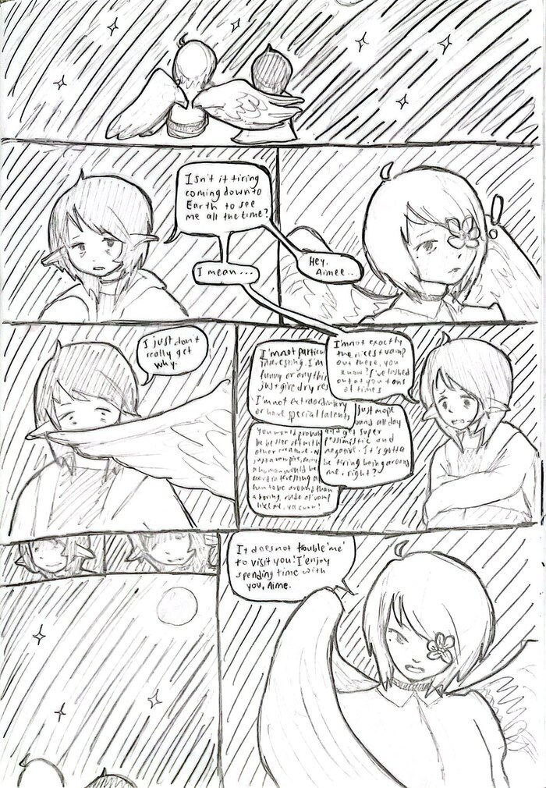

Comic 1: Reassurance
read RtL
Transcript
Aimé: Hey, Aimée...
Isn't it tiring coming down to Earth to see me all the time?
I mean...
I'm not exactly the nicest vamp out there, you know? I've lashed out at you tons of times.
I'm not particularly interesting. I'm not funny or anything. I just give dry responses. I'm not extraordinary or have special talents.
I just mope around all day and get super pessimistic and negative. It's gotta be tiring being around me, right?
You would probably be better off with some other creature. Not just a vampire, maybe a human would be more interesting and fun to be around than a borind, rude ol' vamp like me, you know?
I just don't really get why-
Aimée: It does not trouble 'me' to visit you. 'I' enjoy spending time with you, Aimé.